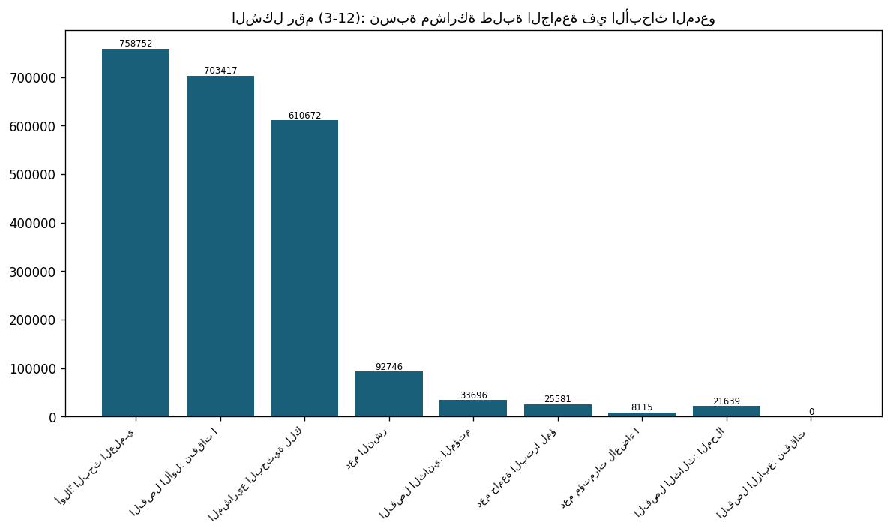
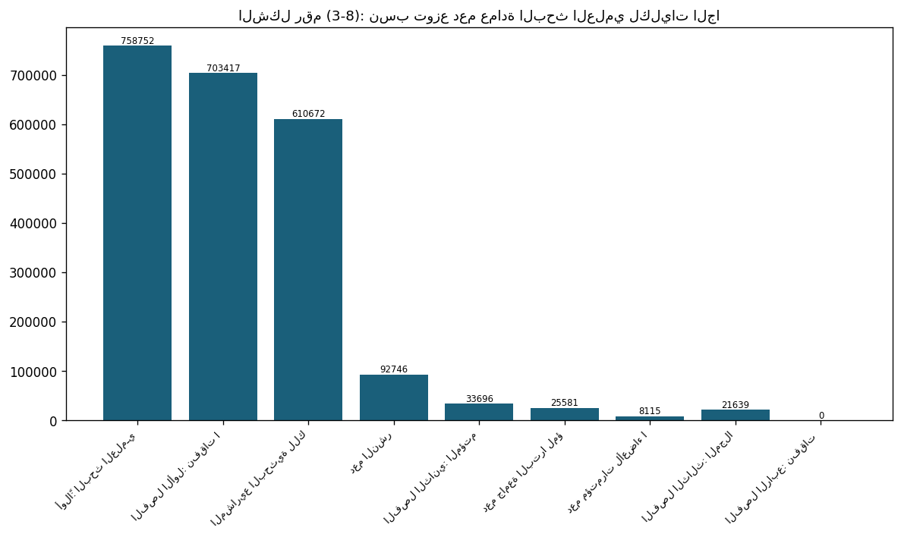
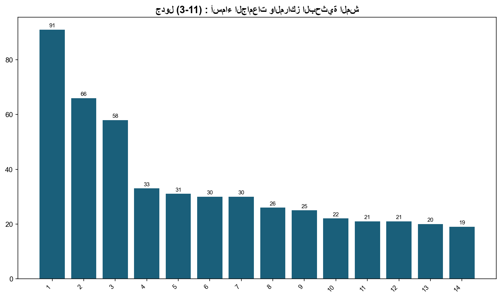
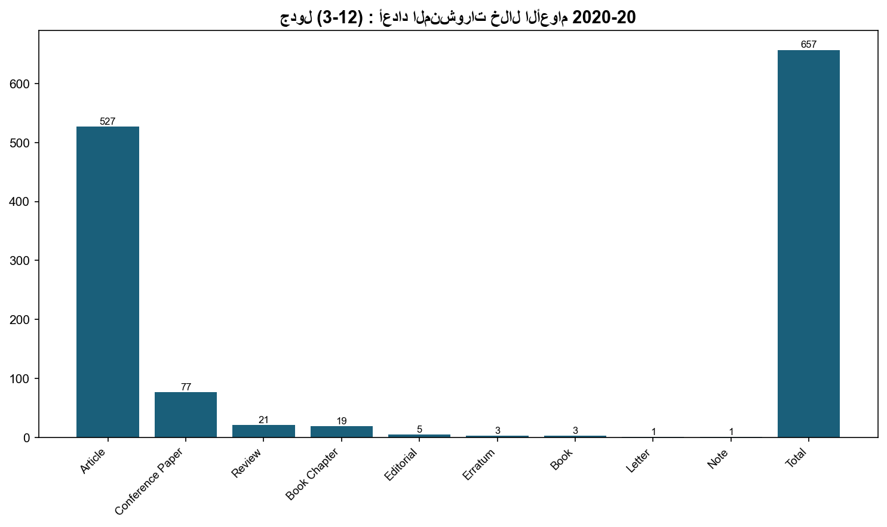
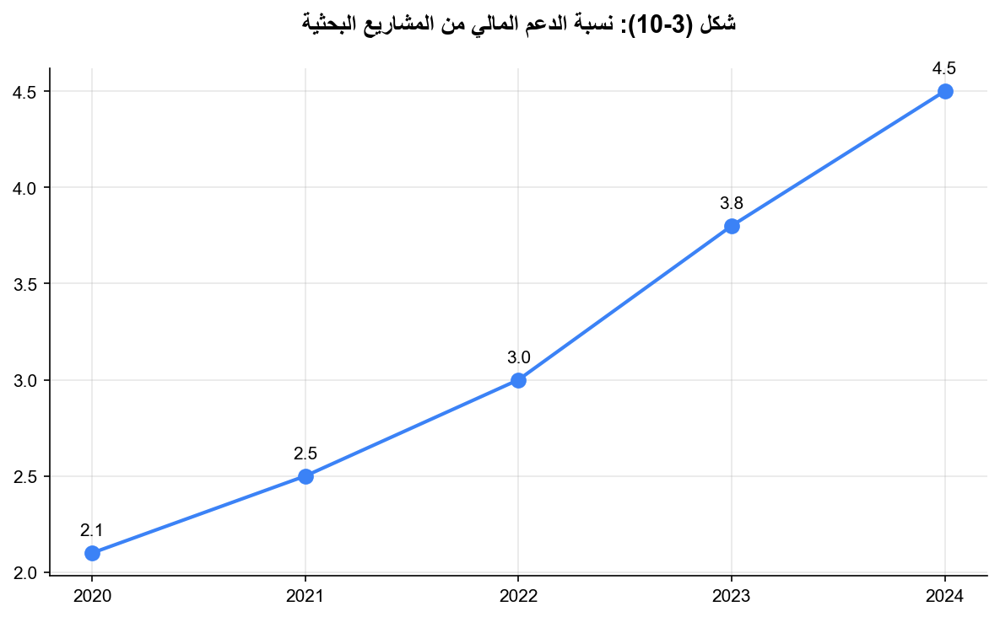
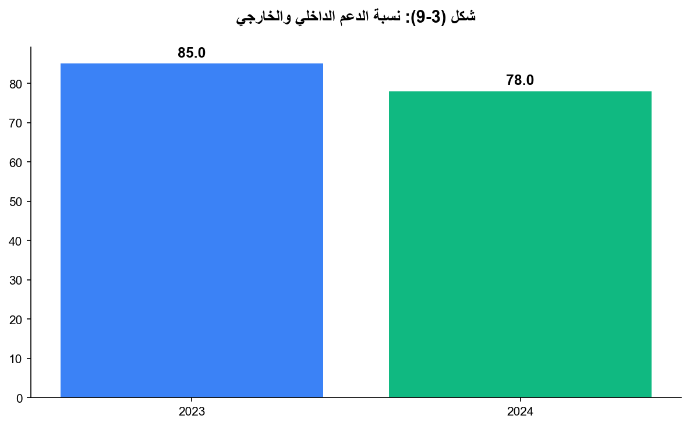
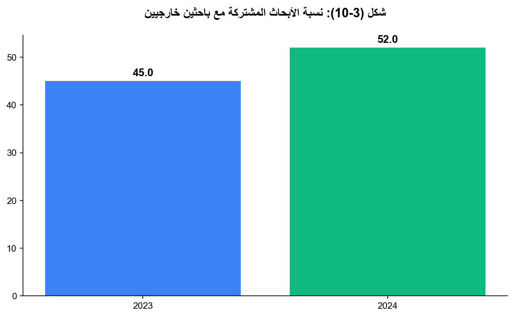
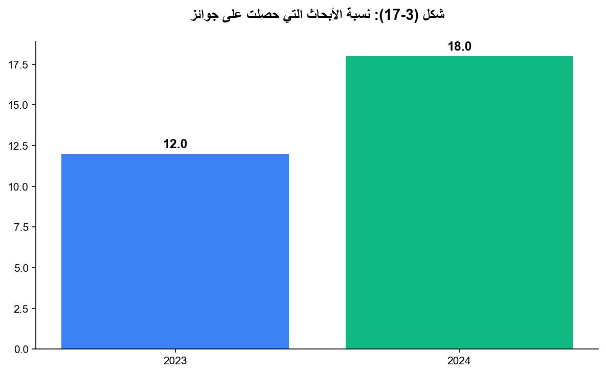
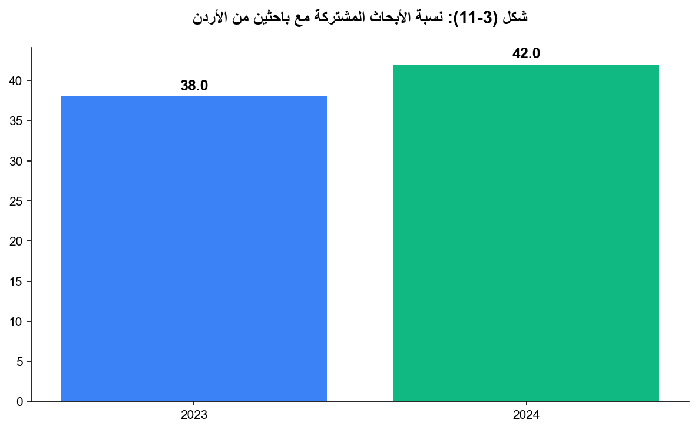
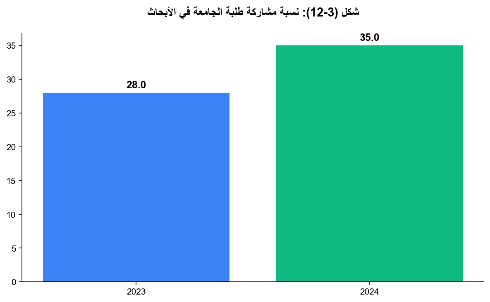

3.7: نسبة الدعم المالي من المشاريع البحثية إلى إجمالي الإيرادات
📝 46 فقرة
📋 5 جدول
📊 19/11 شكل
بلغت نسبة الدعم المالي الذي حصلت عليه الجامعة من المشاريع البحثية المدعومة محليًّا أو المشتركة مع جامعات أو مراكز بحث عالمية إلى إجمالي إيرادات الجامعة السنوية حوالي 3.75%. ويُوضح الجدول أدناه موازنة البحث العلمي للعام المالي 2024.
الإنفاق على أنشطة البحث العلمي، وحضور المؤتمرات، والتدريب، والنشر لتغطية نفقات الأنشطة الآتية:
دعم مشاريع الأبحاث العلمية التي تقدم بها أعضاء هيئة التدريس، ودعم نشر الكتب التي قاموا بتأليفها.
دعم حضور أعضاء هيئة التدريس للمؤتمرات العلمية العالمية، والإقليمية، والمحلية، وبخاصة من له بحث مقبول في المؤتمر.
توفير البنية التحتية لأبحاث أعضاء هيئة التدريس، من أجهزة، وتجهيزات، ومواد ومستهلكات، وغيرها، لأغراض البحث العلمي.
تشجيع الباحثين على إجراء الأبحاث المشتركة مع الجامعات، والمؤسسات العلمية، والصناعية والتجارية الأخرى؛ بهدف تعزيز التعاون مع مؤسسات المجتمع المختلفة.
بموجبه قام مجلس البحث العلمي خلال العام الجامعي (2023/2024) بعقد (7) اجتماعات تضمنت (408) قرارًا شمل ما يلي:
دعم (36) مشروعًا بحثيًا علميًا بعد اجتيازها التقييم.
دعم نشر الأوراق العلمية وحوافز النشر لـ (144) عضو هيئة تدريس.
دعم (52) مؤتمرًا للباحثين.
دعم (4) مؤتمرات خارجية.
تكريم الباحثين المتميزين في كل قسم أكاديمي وعددهم (20) باحثًا.
التنسيب بتعديل تعليمات البحث العلمي.
إصدار مجلة البصائر لأبحاث الأعمال.
تقييم المستوى البحثي لأعضاء هيئة التدريس في الجامعة خلال الفترة 2023-2024
تم إجراء تقييم الأبحاث العلمية المدعومة من عمادة البحث العلمي والدراسات العليا من قبل الباحثين أنفسهم من خلال استبيان تم توزيعه على أعضاء الهيئة التدريسية ليغطي السنوات من 2023-2024 وتركزت الأسئلة على ما يلي:
نسب توزع أعداد الدعم ما بين الكليات من الأعوام 2023-2024.
نسبة الدعم الخارجي من السنوات 2023-2024.
يُبين الشكل أعلاه نسبة الدعم الخارجي للعامين 2023-2024، حيث تبين أن الدعم المقدم من الخارج للأبحاث المدعومة من الجامعة شكّل ما نسبته 23% من مجموع الأبحاث المدعومة خلال العامين 2023-2024، وهذه النسبة تُعتبر جيدة جدًا وتدل على أن بعض الباحثين يحتاج لدعم إضافي، مما يعني أن عمادة البحث العلمي قد قامت بتغطية نفقات المشاريع البحثية بشكل كامل بنسبة 77% من الأبحاث دون الحاجة لدعم خارجي.
ومن جهة أخرى ربما احتاج الباحثون لإضافة معطيات جديدة لأبحاثهم، مما يتطلب دعمًا خارجيًا وهذا يدل على أنه يوجد عدد من الباحثين المتميزين والقادرين على الحصول على الدعم الخارجي، وتشكل هذه النسبة مؤشرًا إيجابيًا على إمكانية الحصول على الدعم الخارجي ومهمة في حال تقييم الجامعة من قِبل هيئات الاعتماد الداخلي والخارجي.
نسبة الأبحاث المشتركة مع باحثين مشاركين (من خارج الأردن) خلال الفترة من 2023-2024.
يُبين الشكل أعلاه نسبة الأبحاث المشتركة مع باحثين مشاركين (من خارج الأردن)، حيث تبين أن 27% من الأبحاث هي أبحاث مشتركة مع باحثين مشاركين من خارج الأردن وهو توجه تدعمه العمادة حرصًا منها على توطيد التعاون البحثي مع المؤسسات البحثية المرموقة ورفع سمعة البحث العلمي في الجامعة وهو أحد متطلبات هيئات الاعتماد.
ومن الأمثلة على جامعات متعاونة في إنجاز الأبحاث المدعومة خلال الفترة 2023-2024:
جامعة UNIMAP وجامعة Universiti Sains Malaysia ومركز البحوث الزراعية والجامعة الأمريكية في بيروت.
نسبة الأبحاث المشتركة مع باحثين من خارج الجامعة ومتواجدين في جامعات أردنية خلال الفترة 2023-2024.
يبين الشكل أعلاه نسبة الأبحاث المشتركة مع باحثين من خارج الجامعة ومتواجدين في جامعات أردنية خلال الفترة 2023-2024، حيث تبين أن ما نسبته 30% من الأبحاث كانت مشتركة مع باحثين مشاركين من جامعات أردنية مختلفة.
إن نسبة الأبحاث المشتركة مرتفعة مما يساعد في رفع تصنيف الجامعة في حال نشر هذه الأبحاث في مجلات عالمية ذات معامل تأثير مرتفع، بالإضافة إلى حاجة الباحثين لاكتساب الخبرات والمشاركة في المواضيع المتعددة للبحث العلمي كلٌّ حسب اختصاصه، ولتوافر بعض الأدوات البحثية غير المتوفرة لدى الجامعة. ومن أهم الجامعات الأردنية المشتركة في الأبحاث مع جامعة البترا الجامعة الأردنية.
نسبة مشاركة طلاب الجامعة بالبحث العلمي من 2023-2024.
يُبيِّن الشكل أعلاه نسبة مشاركة طلاب الجامعة في البحث العلمي خلال الفترة 2023-2024، حيث كانت نسبة الطلبة المشاركين في الأبحاث المدعومة 29%، مما يعني أن هناك اهتمامًا من قِبل الطلاب والباحثين بالمشاركة في عملية البحث العلمي، ويتم صرف مبالغ للطلبة مقابل هذه المشاركة، مما يساعدهم على تحمُّل بعض أعبائهم المالية، بالإضافة إلى تطوير مهاراتهم البحثية.
وتشكِّل هذه النسبة مؤشرًا إيجابيًا على تفعيل دعم البحث العلمي للطلبة بشكل عام في الجامعة، وهي مهمة أيضًا في حال تقييم الجامعة من قِبل هيئات الاعتماد الداخلي والخارجي.
نسبة مشاركة طلاب الماجستير إلى البكالوريوس من الابحاث التي تم مشاركة الطلبة فيها في الفترة 2023-2024.
يُبيِّن الشكل أعلاه نسبة مشاركة طلاب الماجستير والبكالوريوس في الأبحاث المدعومة من عمادة البحث العلمي خلال الفترة 2023-2024، حيث يظهر أن نسبة مشاركة طلبة الماجستير بلغت 63% مقارنة بطلبة البكالوريوس. وذلك يعني أن طلبة الماجستير أيضًا يقومون بمساعدة الباحثين في أعمالهم البحثية، بالإضافة إلى قيامهم بإعداد رسائل الماجستير.
نسبة مشاركة مساعدي الباحث في الأبحاث المدعومة (من داخل وخارج الجامعة) خلال الفترة 2023-2024.
يُبيِّن الشكل أعلاه نسبة مشاركة مساعدي الباحث في الأبحاث المدعومة (من داخل وخارج الجامعة) خلال الفترة 2023-2024، حيث يُبيِّن الشكل أنه تم إشراك مساعدي الباحث في الأبحاث المدعومة بنسبة 86%.
فقد تم في ما نسبته 54% من الأبحاث الاستعانة بمساعدي باحث من داخل الجامعة، بينما في 14% منها من خارج الجامعة، بالإضافة إلى أن 18% من الأبحاث المدعومة احتاجت إلى مساعدي باحث من داخل وخارج الجامعة معًا لإنجازها.
نسبة الإنتهاء من المشاريع البحثية بناءً على تاريخ تسليم التقريرين الفني والمالي النهائيين خلال الفترة 2023-2024.
يُبيِّن الشكل أعلاه نسبة الانتهاء من المشاريع البحثية بناءً على تاريخ تسليم التقريرين الفني والمالي النهائيين للعام 2023-2024، حيث تبيَّن أن نسبة الإنجاز بلغت 52%، بينما ما نسبته 48% لم يتم تسليم تقريريها النهائيين.
نسبة النشر حسب طبيعة الناتج العلمي من الأبحاث المدعومة خلال الفترة 2023-2024.
يُبيِّن الشكل أعلاه نسبة النشر حسب طبيعة الناتج العلمي من الأبحاث المدعومة خلال الفترة 2023-2024، ويظهر أن معظم النشر يكون في شكل أوراق علمية حيث شكَّلت ما نسبته 67%، وتوزَّعت باقي النشريات في أشكال مختلفة من منتجات وبرامج وبحوث في مؤتمرات لتصبح نسبة التحقق من الإنجاز السنوي 33%.
علمًا بأنه توجد أهداف فرعية للدعم لعمادة البحث العلمي تتلخص في تقديم جزء من الدعم لأبحاث خدمية أو تنموية تهدف لخدمة الجامعة والمجتمع المحلي، ولا ينتج عنها بالضرورة نشر بحثي. وبالتالي، قد تكون بعض هذه الأبحاث من ضمن الأبحاث التي قدمت خدمة للجامعة والمجتمع المحلي ولم يستطع الباحثون فيها نشر أعمالهم.
وتمثل هذه الأبحاث الخدمية نسبة محدودة لأن كثيرًا من الأبحاث قد نجحت في الجمع بين النشر البحثي وتقديم خدمات للجامعة والمجتمع، كما سيظهر لاحقًا.
نسبة الأبحاث المدعومة التي حصلت على جوائز أو منح بحثية خلال الفترة 2023-2024.
يُبيِّن الشكل أعلاه نسبة الأبحاث المدعومة التي حصلت على جوائز خلال الفترة 2023-2024، حيث يُظهر أن نسبة 3% من الأبحاث المدعومة قد حصلت على جوائز أو منح بحثية، علمًا بأن الحصول على جوائز يتطلب أبحاثًا متميزة.
نسبة الإستفادة من نتائج الأبحاث المدعومة خلال الفترة 2023-2024.
يُبيِّن الشكل أعلاه نسبة الاستفادة من نتائج الأبحاث المدعومة خلال الفترة 2023-2024، ويظهر أن ما نسبته 35% من الأبحاث المدعومة قد قدم فائدة لصالح الجامعة والمجتمع، علمًا بأن نسبة 65% ستقدم دعمًا غير مباشر للجامعة من خلال النشر البحثي في المجلات العلمية المختلفة، مما يرفع من تصنيف الجامعة لدى هيئات الاعتماد، وهذا هو الهدف الرئيسي للدعم.
نلاحظ من الجدول السابق أن أعداد المنشورات (في شكل أوراق بحثية وفصول في كتب وأوراق مؤتمرات ومراجعات بحثية) قد ازدادت عن الأعوام السابقة، وتم الطلب من الباحثين زيادة المراجعات (Reviews) لما لها من أهمية في زيادة عدد الاستشهادات، إذ نلاحظ زيادة ملحوظة في عددها مقارنة بالسنوات الماضية.










جدول (3-8) : موازنة البحث العلمي للعام المالي 2024.
📊 9 صف من البيانات
| البند | المخصص المحتجز الموافق عليه |
|---|---|
| أولاً: البحث العلمـي والمؤتمرات والمجلات العلمية | 758,752 |
| الفصل الأول: نفقات البحث العلمي | 703417 |
| المشاريع البحثية للكليات | 610672 |
| دعم النشر | 92746 |
| الفصل الثاني: المؤتمـــرات والندوات والزيارات العلمية | 33696 |
| دعم جامعة البترا لمؤتمرات | 25581 |
| دعم مؤتمرات لأعضاء الهيئة التدريسية | 8115 |
| الفصل الثالث: المجلات العلمية ومكافآت تقييم الأبحاث | 21639 |
| الفصل الرابع: نفقات التزامات سنوات سابقة/بحث علمي | 0 |
جدول (3-9) : المشاريع البحثية التي دعمتها عمادة البحث العلمي للعام (2024).
📊 36 صف من البيانات
| الرقم | الباحث | الكلية | رقم البحث | عنوان البحث |
|---|---|---|---|---|
| د. خليل البطاينة | الآداب والعلوم | 1/1/2024 | A Comparative Study of AI-Generated Writing and EFL/ESL Student Writing | |
| د. محمد قواقزة | الآداب والعلوم | 3/1/2024 | The Problem of Translating Qad in the Holy Qur’an into English Language | |
| د. إبراهيم حواري | الآداب والعلوم | 4/1/2024 | Pronunciation Learning Strategies used by EFL Learners for Undergraduate Level | |
| د.ة نهى سويدان | الآداب والعلوم | 5/1/2024 | Phytochemical Analysis, Antioxidant, And Biological Activities Of Jordanian Fig | |
| د. مؤيد اسعيفان | الآداب والعلوم | 6/1/2024 | A novel synthesized silver nanoparticle/Urea/kaolinite composites as soil enhanc | |
| د. عبد المنعم الطويق | الآداب والعلوم | 7/1/2024 | Screening for the presence of heavy metals, total soluble solids, taurine and ca | |
| د. أحمد الدراوشة | الآداب والعلوم | 8/1/2024 | [FeFe]-hydrogenase Model Complexes Containing Mixed Chalcogene Bridges | |
| د. عبد المنعم الطويق | الآداب والعلوم | 9/1/2024 | Using modified walnut shells with magnetic nanoparticles for heavy metals remova | |
| أ. د. فيصل أبو الرب | العلوم الإدارية والمالية | 1/2/2024 | Impact of Digital Transformation on Customers Satisfaction: An Empirical Investi | |
| أ. د. فيصل أبو الرب | العلوم الإدارية والمالية | 2/2/2024 | AI-Driven Business Transformation: Pioneering Intelligent Operations across Func | |
| د. محمد نوفل | العلوم الادارية والمالية | 3/2/2024 | Academics’ continued trust in Generative AI service quality: a DEMATEL study | |
| د. بلال صوان | العلوم الادارية والمالية | 4/2/2024 | Diagnosing chronic kidney disease using machine learning | |
| د. ياسر الهمشري | العلوم الادارية والمالية | 5/2/2024 | The impact of using green accounting on the agricultural sector in reducing the | |
| د. أنس كنعان | العلوم الادارية والمالية | 6/2/2024 | A Comprehensive Examination of IoT Security and Privacy Measures in E-business | |
| د. حسام الدين برهم | العلوم الادارية والمالية | 8/2/2024 | Multimodal AI for User Interface Recognition and Operative LLM AI agents | |
| د. عبد الكريم البطاينة | العلوم الادارية والمالية | 9/2/2024 | The impact of applying smart contracts (block chain technology) in the Land Regi | |
| د. نسيم مطر | العلوم الادارية والمالية | 10/2/2024 | Factors Affecting Behavioral Intentions towards Using Artificial Intelligence Se | |
| د. محمد علي الخالدي | العلوم الادارية والمالية | 11/2/2024 | Extracting Value from Big Data through Business Intelligence Tools and Technique | |
| د. محمد العثمان | تكنولوجيا المعلومات | 1/3/2024 | Securing Smart Home Networks from Cyber Threats | |
| د. شريف مخادمه | تكنولوجيا المعلومات | 2/3/2024 | An efficient Intrusion detection system based on an intelligent improved feature | |
| د. محمد عرفة | تكنولوجيا المعلومات | 3/3/2024 | AE-WGAN: Detecting anomaly attacks based on Autoencoder and Wasserstein Generati | |
| أ. د. عدنان بدران | الصيدلة والعلوم الطبية | 1/4/2024 | Investigation into the anticancer property of Halodule uninervis seagrass ethano | |
| د.ة دانيا الحياري | الصيدلة والعلوم الطبية | 2/4/2024 | physicochemical and biopharmaceutical characterization of novel isoindigo compou | |
| د. أحمد العثامنة | الصيدلة والعلوم الطبية | 3/4/2024 | Fermented Food-derived products prevent skeletal muscle atrophy in a murine mode | |
| د.ة ملاك جابر | الصيدلة والعلوم الطبية | 4/4/2024 | Development of improved patient-tailored iron supplements using 3d printing | |
| د. هبة السيد | الصيدلة والعلوم الطبية | 5/4/2024 | Investigating nutrient content (nutrient) claims of some packaged products sold | |
| د. أحمد الشيخ | الصيدلة والعلوم الطبية | 6/4/2024 | Synthesis and biological evaluation of 4-anilinoquinolines as anti-cancer agents | |
| أ. د. مياس الريماوي | الصيدلة والعلوم الطبية | 7/4/2024 | The study of Capric Acid-Arginine (SCiGATES foam) as Fluoride-Free Toothpaste on | |
| د. قاسم عبد الله | الصيدلة والعلوم الطبية | 8/4/2024 | Redefining TKI Efficacy and Resistance in Mitochondrial-Deficient Cancers | |
| أ. د. نضال القنة | الصيدلة والعلوم الطبية | 9/4/2024 | Developing research models using cell technology to develop cellular and molecul | |
| د.ة دعاء أبو عرقوب | الصيدلة والعلوم الطبية | 10/4/2024 | Evaluation of the cytocompatibility of Poly (lactic-co-glycolic acid) (PLGA) nan | |
| د. مصطفى مجر | طب الأسنان | 1/8/2024 | amel Developmental Disorders Due to Prenatal Exposure to Fluoride or Bisphenol A | |
| د. رامز برهومه | طب الأسنان | 2/8/2024 | Detection of Helicobacter pylori prevalence in Saliva among smokers and non-smok | |
| أ. د. فراس السليحات | طب الأسنان | 3/8/2024 | Evaluation of the osteogenic differentiation potential of dental-derived stem ce | |
| د. فاطمة مليجي | طب الأسنان | 4/8/2024 | Dental-derived stem cells for treatment of diabetes Type 1 in a diabetic rat mod | |
| أ. د. فراس السليحات | طب الأسنان | 5/8/2024 | Physiochemical, Mechanical Strength, antibacterial and Economical Feasibility St |
جدول (3-10) : الأوراق العلمية التي قدمت الجامعة دعم نشر وحوافز نشر في مجلات علمية للعام 2024.
📊 389 صف من البيانات
| الرقم | الباحث | الكلية | عنوان البحث | اسم المجلة |
|---|---|---|---|---|
| 1 | د. محمد خير بني دومي | الإعلام | The Jordan News Agency’s (Petra) Coverage of Palestine, Jerusalem, Iraq and Syri | Human and Social Sciences |
| 2 | د. عبيده الربابعه | الإعلام | The Mediating Role of Normative Beliefs about Aggression on the Relationship bet | Immigrant Institutet & ICR Publications Ltd |
| 3 | د. منال هلال المزاهرة | الإعلام | التحديات التي تواجه الصحافة الورقية الأردنية وسبل مواجهتها: الصحفيون الأردنيون ا | Innovations in Modern Cryptography |
| 4 | د. رشا يعقوب | الإعلام | Elaboration of Underpinning Methods and Data Analysis Process of Directed Qualit | Journal of Intercultural Communication |
| 5 | د. رشا يعقوب | الإعلام | The social neuroscience of persuasion approach to the religious intercultural co | Journal of Intercultural Communication |
| 6 | أ. د. رامي عبد الرحيم | الآداب والعلوم | Integrative Analysis of Genomic Data Types and AI Methodologies in Healthcare Ap | 2nd ICCR Conference |
| 7 | د. مؤيد اسعيفان | الآداب والعلوم | Composite nanofilms of graphene and nickel: Fabrication, cw linear and nonlinear | Applied Surface Science |
| 8 | د. معالي مهيدات | الآداب والعلوم | Turbulent and non-turbulent analysis of thermomagnetic convection and heat trans | Case Studies in Thermal Engineering |
| 9 | د. ابراهيم الحواري | الآداب والعلوم | Investigating English Speaking Anxiety Among Undergraduate Students at Zarqa Uni | Studies in Systems, Decision and Control |
| 10 | د. ثائر بري | الآداب والعلوم | Hollow Fiber-in-Syringe Equilibrium Sampling Through Supported-Liquid Membrane f | Bioanalysis |
| 11 | د. منال اللبدي | الآداب والعلوم | On Difference Fuzzy Anti λ-ideal Convergent Double Sequence Spaces | Bulletin of Mathematical Analysis and Applications |
| 12 | د. أماني الداوود | الآداب والعلوم | أثر معيار " ليس في كلام العرب" في أبنية الأسماء: مَنْفَعيل، وفِعْويل، وفُعْلاء | مجلة دراسات العلوم الاجتماعية والإنسانية / الجامعة الأردنية |
| 13 | د. ابراهيم خليل | الآداب والعلوم | أثر معيار " ليس في كلام العرب" في أبنية الأسماء: مَنْفَعيل، وفِعْويل، وفُعْلاء | مجلة دراسات العلوم الاجتماعية والإنسانية / الجامعة الأردنية |
| 14 | د. منير عجاج | الآداب والعلوم | درجة ممارسة الطالبات المعلّمات مهارات التفكير العلمي من وجهة نظر معلمات المدارس | مجلة الزرقاء للبحوث والدراسات الإنسانية |
| 15 | د. أماني الداوود | الآداب والعلوم | البنية السردية في رواية (ظلال القطمون) لإبراهيم السعافين: دراسة نقدية | مجلة دراسات العلوم الإنسانية والاجتماعية |
| 16 | أ. د. رامي عبدالرحيم | الآداب والعلوم | Novel Chitosan Beeswax Matrix for Gastro-Retentive Delivery of Curcumin: A Promi | Journal of Pharmaceutical Innovation |
| 17 | د. عبد المنعم طويق | الآداب والعلوم | Screening for the Presence of Some Heavy Metals, Total Soluble Solids and Caffei | Methods And Objects Of Chemical Analysis |
| 18 | د. عبد المنعم طويق | الآداب والعلوم | Identification of Monosodium Glutamate Contents as a Flavor Enhancer in Differen | Methods And Objects Of Chemical Analysis |
| 19 | د. محمد الحيلواني | الآداب والعلوم | Flavors of Progression in Urban Jordanian Arabic | WORD |
| 20 | د. معالي مهيدات | الآداب والعلوم | Statistical Inference of Normal Distribution Based on Several Divergence Measure | Symmetry |
| 21 | د. غسان أبو فودة | الآداب والعلوم | Statistical Inference of Normal Distribution Based on Several Divergence Measure | Symmetry |
| 22 | د. رائد أبو عواد | الآداب والعلوم | Statistical Inference of Normal Distribution Based on Several Divergence Measure | Symmetry |
| 23 | د. سامر العقيلي | الآداب والعلوم | Statistical Inference of Normal Distribution Based on Several Divergence Measure | Symmetry |
| 24 | أ. د. رامي عبدالرحيم | الآداب والعلوم | A mini review on the applications of artificial intelligence (AI) in surface che | Tenside Surfactants Detergents |
| 25 | د. خليل البطاينة | الآداب والعلوم | Congratulation! A Case Study of Social Media Users in Jordan | International Journal of Arabic-English Studies (IJAES) |
| 26 | د. مؤيد اسعيفان | الآداب والعلوم | Utilizing olive leaves biomass as an efficient adsorbent for ciprofloxacin remov | Environmental Monitoring and Assessment |
| 27 | د. منال اللبدي | الآداب والعلوم | μ-L-Closed Subsets of Noetherian Generalized Topological Spaces | International Journal of Neutrosophic Science (IJNS) |
| 28 | أ. د. وسيم عودة | الآداب والعلوم | Matrix Holder inequalities and numerical radius applications | Linear Algebra and its applications |
| 29 | د. عبد المنعم طويق | الآداب والعلوم | Study of Galena Ore Powder Sintering and Its Microstructure | metals |
| 30 | د. مؤيد اسعيفان | الآداب والعلوم | Study of Galena Ore Powder Sintering and Its Microstructure | metals |
| 31 | أ. د. رامي عبد الرحيم | الآداب والعلوم | Adsorption of single and mixed surfactants consisting of cocoamidopropyl betaine | Tenside Surfactants Detergents |
| 32 | د. عبد المنعم طويق | الآداب والعلوم | Adsorption of single and mixed surfactants consisting of cocoamidopropyl betaine | Tenside Surfactants Detergents |
| 33 | د. مؤيد اسعيفان | الآداب والعلوم | Adsorption of single and mixed surfactants consisting of cocoamidopropyl betaine | Tenside Surfactants Detergents |
| 34 | د. ابراهيم حواري | الآداب والعلوم | Factors affecting learner autonomy in the context of English language learning | Cakrawala Pendidikan |
| 35 | د. مجدي الدهيسات | الآداب والعلوم | Management by Objectives and Its Relationship to the Application of Total Qualit | International Journal of eBusiness and eGovernment Studies |
| 36 | د. فاطمة الطراونة | الآداب والعلوم | The Role of the Documents and Manuscripts Center at the University of Jordan in | Ibero-American Journal of Exercise and Sports Psychology |
| 37 | د. خليل البطاينة | الآداب والعلوم | Students' Perceptions of the Benefits and Challenges of Integrating ChatGPT in H | Pakistan Journal of Life and Social Sciences |
| 38 | د. منال اللبدي | الآداب والعلوم | Pentapartitioned Neutrosophic Vague Soft Sets and its Applications. | International Journal of Neutrosophic Science |
| 39 | د. معالي المهيدات | الآداب والعلوم | Reliability of two-dimensional steady magnetized Jeffery fluid over shrinking sh | Open Physics |
| 40 | د. منال اللبدي | الآداب والعلوم | New structure of algebras using permutations in symmetric groups | Journal of Discrete Mathematical Sciences & Cryptography |
| 41 | أ. د. وسيم عودة | الآداب والعلوم | -Singular value inequalities of matrices via increasing functions | Journal of inequalities and applications. |
| 42 | د. طارق زهير | الآداب والعلوم | -The spiritual journey of Robinson Crusoe through the lens of the Qur’an | Cogent Arts & Humanities |
| 43 | د. محمد قواقزة | الآداب والعلوم | -The Semantic Plurality of the Hyperbolic Forms in the Arabic Language: Morpholo | Dirasat: Human and Social Sciences |
| 44 | د. منال اللبدي | الآداب والعلوم | ON SOME NORLUND ¨ I-CONVERGENT DOUBLE SEQUENCE SPACES OF M-ORLICZ FUNCTIONS | Journal of the Indian Mathematical Society |
| 45 | د. منال اللبدي | الآداب والعلوم | On Copson Ideal Convergent Sequence Spaces. | Sahand Communications in Mathematical Analysis |
| 46 | د. معالي المهيدات | الآداب والعلوم | Entropy generation analysis of oscillatory magnetized darcian flow of mixed ther | Case Studies in Thermal Engineering |
| 47 | د. خليل البطاينة | الآداب والعلوم | A Sociolinguistic Study on the Addressed Positive Politeness Strategies by the E | Bulletin of Electrical Engineering and Informatics |
| 48 | د. منال اللبدي | الآداب والعلوم | PARTIAL EIGENVALUES FOR BLOCK MATRICES | Book |
| 49 | د. جمال عودة الله | الآداب والعلوم | Novel Results on Nigh Lindelöfness in Topological Spaces | Journal of Ayurveda and Integrative Medicine |
| 50 | د. منال اللبدي | الآداب والعلوم | Characterization of Differential and Pure Ideals in the Hurwitz Series Ring: Str | Book: Innovations in Modern Cryptography |
| 51 | د. مؤيد اسعيفان | الآداب والعلوم | -Preparation of Mesoporous Analcime/Sodalite Composite from Natural Jordanian Ka | Pakistan Journal of Life and Social Sciences |
| 52 | أ. د. وسيم عودة | الآداب والعلوم | -Numerical radius inequalities via block matrices | Human and Social Sciences |
| 53 | د. ة منال اللبدي | الآداب والعلوم | -Numerical radius inequalities via block matrices | Applied Sciences |
| 54 | د. رجاء النعيمي | الآداب والعلوم | -Numerical radius inequalities via block matrices | Business Analytical Capabilities and Artificial IntelligenceEnabled Analytics: A |
| 55 | د. جمال عودة الله | الآداب والعلوم | -Some Types of Nth-Locally Compactness Spaces | Synthesis |
| 56 | د. جمال عودة الله | الآداب والعلوم | -Lindel ”Ofness Spaces in NT H Topological Spaces | Jordan Journal of Chemistry |
| 57 | د. جمال عودة الله | الآداب والعلوم | -On The Topological Space of Some n- Refined Neutrosophic Real Intervals and Its | #N/A |
| 58 | د. رجاء النعيمي | الآداب والعلوم | Underwater Thermal Energy Harvesting: Frameworks, Challenges, Applications, and | #N/A |
| 59 | أ. د. رزان إبراهيم | الآداب والعلوم | Orbits of Historical Characters in Walid Saif's Novel "The Fire and the Phoenix | #N/A |
| 60 | د. معالي المهيدات | الآداب والعلوم | Lie-bäcklund symmetry, soliton solutions, chaotic structure and its characterist | #N/A |
| 61 | د. معالي المهيدات | الآداب والعلوم | A novel investigation into time-fractional multidimensional Navier–Stokes equati | Current Research in Green and Sustainable Chemistry |
| 62 | ابراهيم فتحي محمد حواري | الآداب والعلوم | -Analysis of Endophoric Reference in Lewis Carroll’s Alice in Wonderland | Pakistan Journal of Life and Social Sciences |
| 63 | ابراهيم فتحي محمد حواري | الآداب والعلوم | -Working Memory and Lexical Knowledge as Factors of Listening Comprehension Am | International Journal of Interactive Mobile Technologies |
| 64 | د. محمد الحمد | الآداب والعلوم | Medium of Instruction Matters: Reflecting Voices from EFL Teachers in Online/Tra | International Journal of Analysis and Applications |
| 65 | د. معالي المهيدات | الآداب والعلوم | Two branches solutions for mixed convection flow of thermally Williamson nanoflu | Library Management |
| 66 | ابراهيم فتحي محمد حواري | الآداب والعلوم | -Understanding and Addressing Oral Communication Apprehension in Jordanian Stu | Place Branding and Public Diplomacy |
| 67 | د. مؤيد اسعيفان | الآداب والعلوم | Voltammetric Determination of Hydroquinone in Water Samples Using Platinum Elect | Computers |
| 68 | د. مجدي الدهيسات | الآداب والعلوم | درجة ممارسة أنشطة التعليم الممتع لدى طالبات التدريب الميداني في الجامعات الأردني | مجلة جامعة المدينة العالمية للعلوم التربوية والنفسية (MIJEPS) |
| 69 | د. محمد الحيلواني | الآداب والعلوم | In favor of SizeP in DP: Evidence from diminutives in Jordanian Arabic | Italian Journal of Linguistics |
| 70 | د. كمال العواملة | الحقوق | Jordan | Yearbook of Islamic and Middle Eastern Law Online |
| 71 | د. علي الدباس | الحقوق | Jordan | Yearbook of Islamic and Middle Eastern Law Online |
| 72 | د. كمال العواملة | الحقوق | Examining the limitations of AI in business and the need for human insights usin | Journal of Open Innovation: Technology, Market, and Complexity |
| 73 | د. معن الجويحان | الحقوق | التعريف بمقومات جودة الصياغة التشريعية | مجلة العلوم القانونية والسياسية |
| 74 | أ. د. عدنان بدران | الصيدلة والعلوم الطبية | Higher Education in the Arab World: Digital Transformation | Springer Nature |
| 75 | د. دعاء أبو عرقوب | الصيدلة والعلوم الطبية | Biological evaluation of combinations of tyrosine kinase inhibitors with Inecalc | Saudi Pharmaceutical Journal |
| 76 | د. لؤي أبو قطوسة | الصيدلة والعلوم الطبية | Nanobody-based immunosensor for the detection of H. pylori in saliva | Biosensors and Bioelectronics |
| 77 | أ. د. فيصل العكايلة | الصيدلة والعلوم الطبية | Utilizing olive leaves biomass as an efficient adsorbent for ciprofloxacin remov | Environmental Monitoring and Assessment |
| 78 | أ. د. مياس الريماوي | الصيدلة والعلوم الطبية | Utilizing olive leaves biomass as an efficient adsorbent for ciprofloxacin remov | Environmental Monitoring and Assessment |
| 79 | د. بيان الخواجا | الصيدلة والعلوم الطبية | Dissecting the stability of Atezolizumab with renewable amino acid-based ionic l | International Journal of Biological Macromolecules |
| 80 | أ. د. فيصل العكايلة | الصيدلة والعلوم الطبية | Dissecting the stability of Atezolizumab with renewable amino acid-based ionic l | International Journal of Biological Macromolecules |
| 81 | د. منى بسطامي | الصيدلة والعلوم الطبية | Dissecting the stability of Atezolizumab with renewable amino acid-based ionic l | International Journal of Biological Macromolecules |
| 82 | أ. د. نضال القنة | الصيدلة والعلوم الطبية | Dissecting the stability of Atezolizumab with renewable amino acid-based ionic l | International Journal of Biological Macromolecules |
| 83 | د. بيان الخواجا | الصيدلة والعلوم الطبية | Structural insights into novel therapeutic deep eutectic systems with capric aci | RSC Advances |
| 84 | أ. د. مياس الريماوي | الصيدلة والعلوم الطبية | Structural insights into novel therapeutic deep eutectic systems with capric aci | RSC Advances |
| 85 | أ. د. فيصل العكايلة | الصيدلة والعلوم الطبية | Structural insights into novel therapeutic deep eutectic systems with capric aci | RSC Advances |
| 86 | أ. د. نضال القنة | الصيدلة والعلوم الطبية | Structural insights into novel therapeutic deep eutectic systems with capric aci | RSC Advances |
| 87 | د. أية زيد الكيلاني | الصيدلة والعلوم الطبية | Effect of using camel milk on quality characteristics, free amino acid content a | International Journal of Dairy Technology |
| 88 | د. دعاء أبو عرقوب | الصيدلة والعلوم الطبية | Potential Effects of Photobiomodulation Therapy on Human Dental Pulp Stem Cells | Appied sciences |
| 89 | د. دعاء أبو عرقوب | الصيدلة والعلوم الطبية | Doxorubicin conjugates: a practical approach for its cardiotoxicity alleviation | Expert Opinion on Drug Delivery |
| 90 | د. دعاء أبو عرقوب | الصيدلة والعلوم الطبية | Gemcitabine-loaded niosomes: Optimization, characterization, and in vitro effica | Journal of Drug Delivery Science and Technology |
| 91 | أ. د. عدنان بدران | الصيدلة والعلوم الطبية | Enhancing Wastewater Depollution: Sustainable Biosorption Using Chemically Modif | MDPI |
| 92 | أ. د. فيصل العكايلة | الصيدلة والعلوم الطبية | Applications and Risk Assessments of Ionic Liquids in Chemical and Pharmaceutica | Jordan Journal of Chemistry |
| 93 | أ. د. مياس الريماوي | الصيدلة والعلوم الطبية | Applications and Risk Assessments of Ionic Liquids in Chemical and Pharmaceutica | Jordan Journal of Chemistry |
| 94 | أ. د. فيصل العكايلة | الصيدلة والعلوم الطبية | Deep Eutectic System-Based Liquisolid Nanoparticles as Drug Delivery System of C | J Pharmaceutical innovation |
| 95 | أ. د. مياس الريماوي | الصيدلة والعلوم الطبية | Deep Eutectic System-Based Liquisolid Nanoparticles as Drug Delivery System of C | J Pharmaceutical innovation |
| 96 | د. قاسم عبد الله | الصيدلة والعلوم الطبية | Deep Eutectic System-Based Liquisolid Nanoparticles as Drug Delivery System of C | J Pharmaceutical innovation |
| 97 | أ. د. فيصل العكايلة | الصيدلة والعلوم الطبية | What We Know About the Actual Role of Traditional Probiotics in Health and Disea | Probiotics and antimicrobial proteins |
| 98 | أ. د. مياس الريماوي | الصيدلة والعلوم الطبية | What We Know About the Actual Role of Traditional Probiotics in Health and Disea | Probiotics and antimicrobial proteins |
| 99 | أ. د. إبراهيم الأدهم | الصيدلة والعلوم الطبية | What We Know About the Actual Role of Traditional Probiotics in Health and Disea | Probiotics and antimicrobial proteins |
| 100 | أ. د. فيصل العكايلة | الصيدلة والعلوم الطبية | Dual stimuli-responsive polymeric nanoparticles combining soluplus and chitosan | RSC advances |
| ... و 289 صف إضافي | ||||
جدول (3-11) : أسماء الجامعات والمراكز البحثية المشتركة في الأبحاث مع جامعة البترا والتي نشرت مع الجا
📊 14 صف من البيانات
| # | Affiliation name | Documents |
|---|---|---|
| 1 | The University of Jordan | 91 |
| 2 | Zarqa University | 66 |
| 3 | Al-Balqa Applied University | 58 |
| 4 | Al-Ahliyya Amman University | 33 |
| 5 | Al Al-Bayt University | 31 |
| 6 | Universiti Sains Malaysia | 30 |
| 7 | INTI International University | 30 |
| 8 | Applied Science Private University | 26 |
| 9 | University of Sharjah | 25 |
| 10 | Jadara University | 22 |
| 11 | Al-Zaytoonah University of Jordan | 21 |
| 12 | American University of Madaba | 21 |
| 13 | Jordan University of Science and Technology | 20 |
| 14 | Shaqra University | 19 |
جدول (3-12) : أعداد المنشورات خلال الأعوام 2020-2024.
📊 11 صف من البيانات
| Document Type | Sept. 2020 | Sept. 2021 | Nov 2022 | Dec 2023 | March 2024 |
|---|---|---|---|---|---|
| Article | 527 | 713 | 913 | 1,141 | 1,486 |
| Conference Paper | 77 | 85 | 100 | 120 | 198 |
| Review | 21 | 27 | 43 | 61 | 82 |
| Book Chapter | 19 | 22 | 25 | 81 | 155 |
| Editorial | 5 | 5 | 6 | 8 | 11 |
| Erratum | 3 | 4 | 4 | 6 | 7 |
| Book | 3 | 3 | 3 | 6 | 7 |
| Letter | 1 | 1 | 2 | 2 | 2 |
| Note | 1 | 1 | 1 | 2 | 2 |
| Data Paper | = | - | - | 1 | 1 |
| Total | 657 | 861 | 1097 | 1,427 | 1,951 |